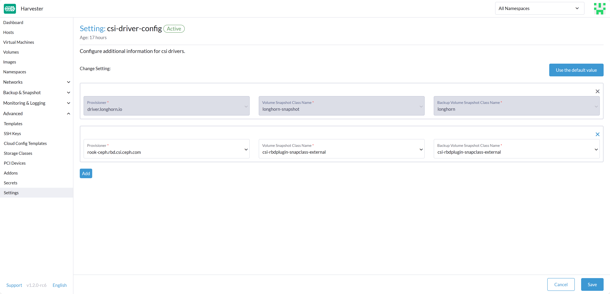
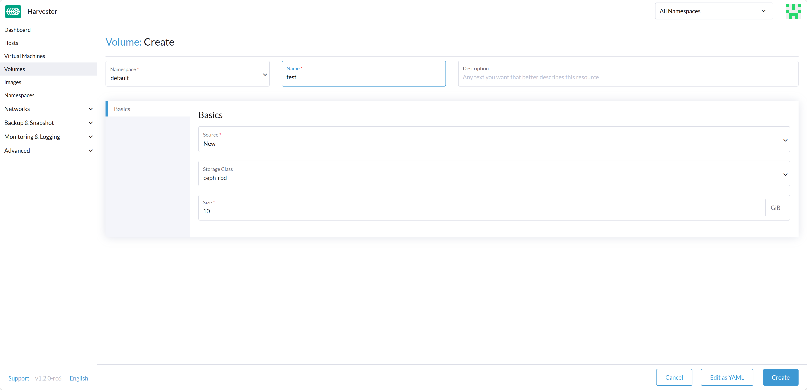
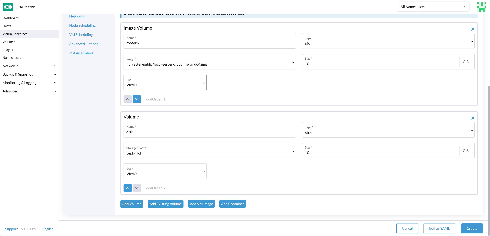

Third-Party Storage Support
SUSE Virtualization now offers the capability to install a Container Storage Interface (CSI) in your SUSE Virtualization cluster. This allows you to leverage external storage for the Virtual Machine’s non-system data disk, allowing you to use different drivers tailored for specific needs, whether for performance optimization or seamless integration with your existing in-house storage solutions.
|
The Virtual Machine (VM) image provisioner in SUSE Virtualization still relies on Longhorn. Before version 1.2.0, SUSE Virtualization exclusively supported Longhorn for storing VM data and did not offer support for external storage as a destination for VM data. |
Prerequisites
For the Harvester functions to work well, the third-party CSI driver needs to have the following capabilities:
-
Support expansion
-
Support snapshot
-
Support clone
-
Support block device
-
Support Read-Write-Many (RWX), for Live Migration
Create Harvester cluster
Harvester’s operating system follows an immutable design, meaning that most OS files revert to their pre-configured state after a reboot. Therefore, you might need to perform additional configurations before installing the Harvester cluster for third-party CSI drivers.
Some CSI drivers require additional persistent paths on the host. You can add these paths to os.persistent_state_paths.
Some CSI drivers require additional software packages on the host. You can install these packages with os.after_install_chroot_commands.
|
Upgrading Harvester causes the changes to the OS in the |
Install the CSI driver
After installing the Harvester cluster is complete, refer to How can I access the kubeconfig file of the Harvester cluster? to get the kubeconfig of the cluster.
With the kubeconfig of the Harvester cluster, you can install the third-party CSI drivers into the cluster by following the installation instructions for each CSI driver. You must also refer to the CSI driver documentation to create the StorageClass and VolumeSnapshotClass in the Harvester cluster.
Configure Harvester Cluster
Before you can make use of Harvester’s Backup & Snapshot features, you need to set up some essential configurations through the Harvester csi-driver-config setting. Follow these steps to make these configurations:
-
Login to the Harvester UI, then navigate to Advanced > Settings.
-
Find and select csi-driver-config, and then select ⋮ > Edit Setting to access the configuration options.
-
Set the Provisioner to the third-party CSI driver in the settings.
-
Next, configure the Volume Snapshot Class Name. This setting points to the name of the
VolumeSnapshotClassused for creating volume snapshots or VM snapshots.

Virtual Machine Backup Compatibility
-
In SUSE Virtualization v1.4.2 and later versions, the setting Backup Volume Snapshot Class Name cannot be used with external storage. SUSE Virtualization is unable to create backups of volumes in external storage because the backup function is not included in the CSI standard and there is no way to create a remote backup for differing storage providers. Backup support in SUSE Virtualization is limited to Longhorn V1 Data Engine volumes.
-
SUSE Virtualization is unable to restore virtual machine backups with external storage because the data does not have a remote copy.
Use the CSI driver
After successfully configuring these settings, you can utilize the third-party StorageClass. You can apply the third-party StorageClass when creating an empty volume or adding a new block volume to a VM, enhancing your Harvester cluster’s storage capabilities.
With these configurations in place, your Harvester cluster is ready to make the most of the third-party storage integration.


Known issues
1. Multipath support
The multipathd service is disabled in SUSE Virtualization by default. However, certain third-party CSIs may require you to enable the service.
After installing SUSE Virtualization, you can enable and start multipathd by logging into each cluster node and running the following commands:
systemctl enable multipathd
systemctl start multipathdAlternatively, you can create a SUSE® Rancher Prime: OS Manager CloudInit file in the /oem directory on each host (for example, /oem/99-start-multipathd.yaml) with the following contents:
stages:
default:
- name: "start multipathd"
systemctl:
enable:
- multipathd
start:
- multipathdThis process can be automated across the Harvester cluster using a CloudInit CRD.
apiVersion: node.harvesterhci.io/v1beta1
kind: CloudInit
metadata:
name: start-mutlitpathd
spec:
matchSelector:
harvesterhci.io/managed: "true"
filename: 99-start-mutlitpathd
contents: |
stages:
default:
- name: "start multipathd"
systemctl:
enable:
- multipathd
start:
- multipathd
paused: false